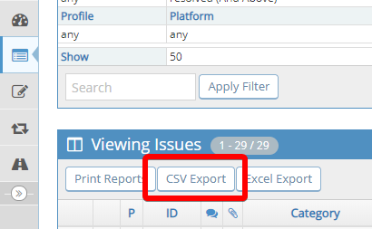
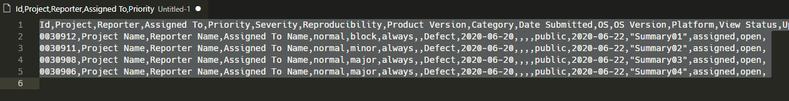
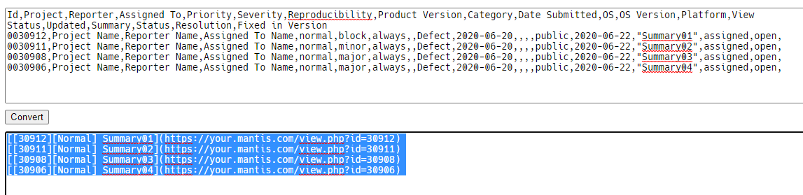
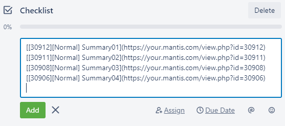
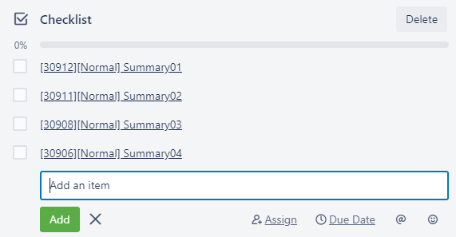

Convert
Usage
Export CSV from Mantis

Copy CSV string and Paste it in Input box

Click Convert button

Copy text from Output box and paste it in Trello checklist

Hit Enter and your formatted Mantis list will be added to Trello checklist
